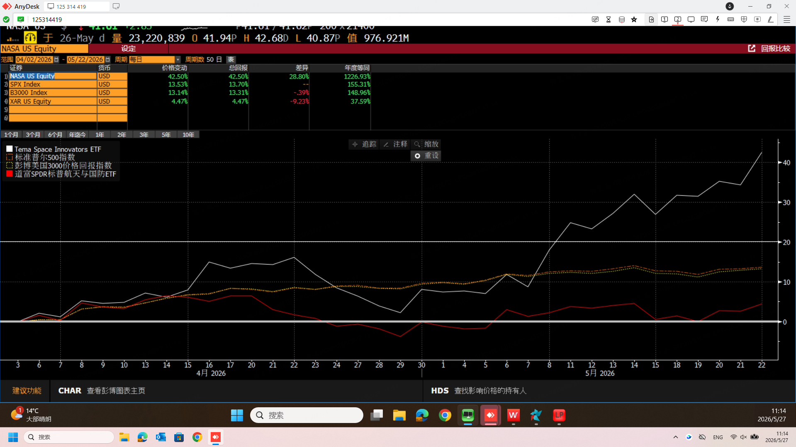
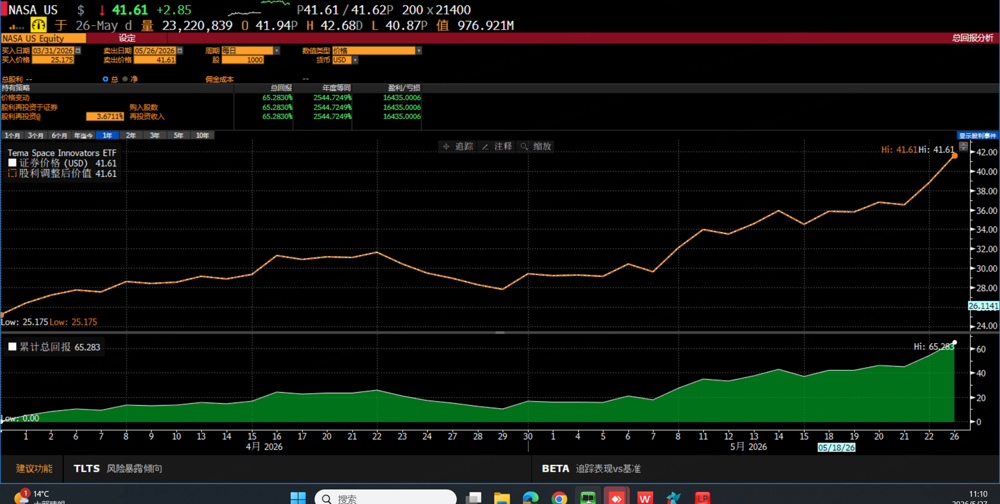
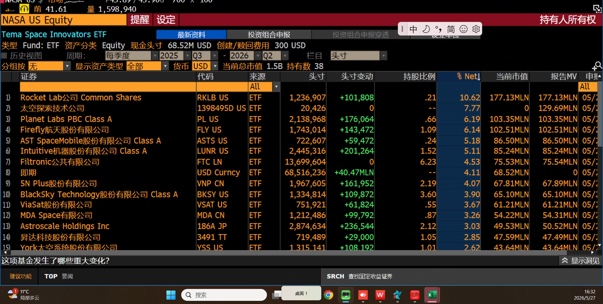
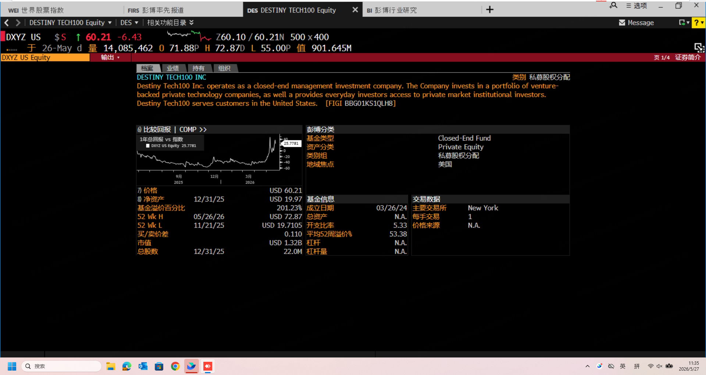
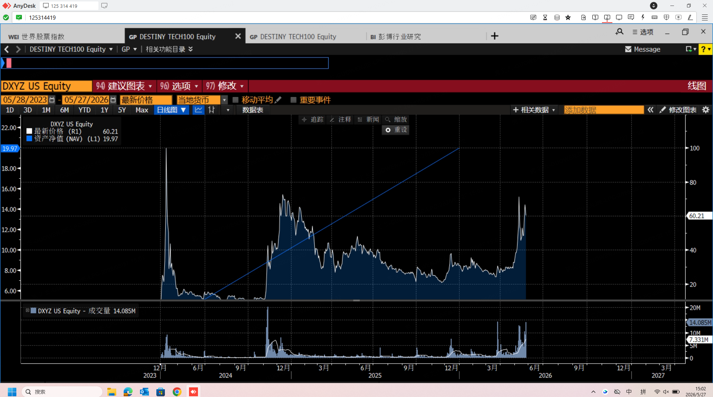
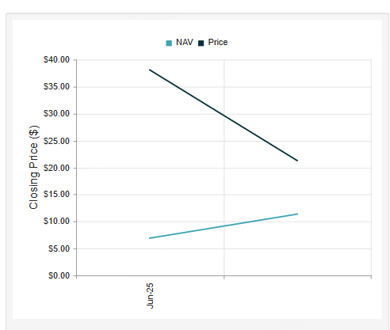

NASA（Tema Space Innovators ETF）是 Tema ETFs 于 2024 年 6 月发行的太空主题 ETF。该基金前 9 个月默默无闻，跟随大盘走势波动。
转折点出现在 2026 年 4 月 1 日，TechCrunch 报道 SpaceX（Space Exploration Technologies Corp.）已秘密向 SEC 递交 IPO 申请。该日之后两个月，NASA 累计涨幅达到 +41.82%（截至 2026/05/26 收盘价 $41.61）。
| 标的 | 同期涨幅 |
|---|---|
| NASA（Tema Space Innovators ETF） | +41.82% |
| XAR（SPDR 航空航天与国防 ETF） | ~+12% |
| B3000I（彭博美国 3000 工业板块） | ~+8% |
| SPX（标普 500） | ~+5% |
数据来源：Bloomberg Terminal COMP 命令对照，时间窗口 2026/04/01 — 2026/05/26。
NASA 跑赢标普 500 约 8 倍，跑赢同板块 ETF 约 3-4 倍。

更具说明意义的是，2026 年 5 月 20 日（SpaceX S-1 招股书在 SEC EDGAR 公开发布日）当天，NASA 单日成交量达到 23,220,839 股，是平时日均成交量的 5 倍以上。本报告认为该交易量异动反映了机构资金的明确进场信号。

NASA ETF 截至最近披露日的基本属性：
| 项目 | 数值 |
|---|---|
| 总资产 (AUM) | ~ $1.5 billion |
| 持仓数 | 38 |
| 类型 | 主动管理 ETF（无跟踪指数） |
| 区域 | 全球 / Broad Market |
| 上市日 | 2024 年 6 月 |
| 收盘价（2026/05/26） | $41.61 |
| 52 周高 / 低 | $42.68 / $13.50 |
| 现金头寸 | $68.52M（4.11%） |
下表呈现 Bloomberg MHD 命令拉取的前 15 大持仓数据：
| # | 持仓 | Ticker | % Net | 市值 (USD) |
|---|---|---|---|---|
| 1 | Rocket Lab USA Inc Common Shares | RKLB US | 10.62% | $177.13M |
| 2 | 太空探索技术公司（Space Exploration Technologies Corp. SPV） | 1398495D US | 7.77% | $129.69M |
| 3 | Planet Labs PBC Class A | PL US | 6.19% | $103.35M |
| 4 | Firefly Aerospace Common Shares | FLY US | 6.14% | $102.51M |
| 5 | AST SpaceMobile Class A | ASTS US | 5.18% | $86.50M |
| 6 | Intuitive Machines Class A | LUNR US | 5.11% | $85.24M |
| 7 | Filtronic plc | FTC LN | 4.53% | $75.53M |
| 8 | USD Currency (Cash) | USD Curncy | 4.11% | $68.52M |
| 9 | 5N Plus Inc | VNP CN | 4.07% | $67.81M |
| 10 | BlackSky Technology Class A | BKSY US | 3.90% | $65.10M |
| 11 | ViaSat Inc | VSAT US | 3.67% | $61.21M |
| 12 | MDA Space Ltd | MDA CN | 3.26% | $54.22M |
| 13 | Astroscale Holdings Inc | 186A JP | 3.03% | $49.53M |
| 14 | 昇达科技股份有限公司 | 3491 TT | 2.85% | $47.59M |
| 15 | York Space Systems | YSS US | 2.62% | $43.64M |

第一，第二大持仓为 SpaceX SPV，权重 7.77%。Bloomberg 使用内部代号 1398495D US 标识该持仓（SpaceX 尚未公开上市，无标准股票代号），市值约 $129.69M，仓位变动为 0（说明为稳定配置）。NASA 是同类公开 ETF 中唯一直接持有 SpaceX 私募份额的可买可卖产品。
第二，前 6 大持仓为"SpaceX + 联动股全家桶"。RKLB（10.62%）+ SpaceX SPV（7.77%）+ PL（6.19%）+ Firefly（6.14%）+ ASTS（5.18%）+ LUNR（5.11%）合计权重 41.01%。Tema 的主动管理选股偏向 SpaceX 板块联动度最高的标的——这是被动指数化产品难以复制的结构。
第三，全球化分散。持仓涵盖英国（Filtronic）、加拿大（5N Plus、MDA Space）、日本（Astroscale）、台湾（昇达科技）。该地理分散降低了单一监管区域的集中风险，但部分非美标的的二级市场流动性较弱。
本报告认为，NASA 的产品设计组合了"SpaceX SPV 直接持仓 + 主动重仓 SpaceX 联动股"的双重敞口。这是 NASA 在 IPO 前夜行情中跑赢同业的结构性原因。
本节列示市场上主要的 SpaceX 受益标的，按"SpaceX 关系强度"自高至低排序。
| 标的 | 类型 | 与 SpaceX 关系 | 主要持仓 | 风险 | 适合投资者 |
|---|---|---|---|---|---|
| DXYZ | CEF（封闭式） | 直接持 17.4% SpaceX SPV（13.51% + 3.88% 两笔） | 47% 国债 + SpaceX + Shield AI / Revolut / Skild AI 等独角兽 | 市价 / NAV 溢价 ~5x，溢价回归即跌 40-60% | 相信独角兽集合概念 + 能承受 5x 高溢价 + 接受短期情绪驱动波动的投资者 |
| NASA | 主动 ETF | 直接持 7.77% SpaceX SPV + 重仓 RKLB / Firefly / PL / ASTS / LUNR | RKLB 10.62% / SpaceX 7.77% / PL 6.19% / Firefly 6.14% / ASTS 5.18% / LUNR 5.11%，38 只全球太空股 | 集中度（前 6 占 41%）/ 主动管理人风险 / SpaceX SPV 估值季度更新滞后 | 核心配置型：想要 SpaceX 直接暴露 + 板块联动双击 + 不愿承受 CEF 溢价的投资者 |
| ARKVX | Interval Fund | 持有 SpaceX（具体仓位不公开披露） | 木头姐 ARK 风险投资基金，含 SpaceX 等多家私募独角兽 | 流动性极差：每季度赎回上限 5% 净资产 + 普通券商账户通常买不到 | 高净值 / 机构 / 长线持有 + 接受多年锁定 + 信任 ARK 选股的投资者 |
| UFO | 被动 ETF | 0% 直接 SpaceX，板块联动 | 全球航天股，含 GEO 卫星 / 国防 / 火箭，2019 年发行的老牌纯太空 ETF | 持仓偏老牌 GEO 卫星，错过 LEO 新势力部分涨幅 | 想要分散纯太空主题 + 偏好被动指数化 + 不强求 SpaceX 直接持仓的投资者 |
| ARKX | 主动 ETF | 0% 直接 SpaceX | 木头姐主题选股，含火箭 / 卫星 / 3D 打印 / 物联网等"广义太空" | 主题更宽，纯度低（含非太空主线标的） | 信任 ARK 主动管理风格 + 接受跨主题混合的投资者 |
| ORBX | 被动 ETF | 0% 直接 SpaceX | Global X 太空科技指数化产品，被动跟踪太空主题指数 | 大发行商被动产品，灵活性最低，难捕捉短期事件型机会 | 偏好大发行商 + 低成本被动指数化 + 长线持有的投资者 |
| UFOX | 被动 ETF | 0% 直接 SpaceX | Defiance "Connective Technologies" 主题：5G + 卫星 + IoT 混合 | "纯度最低"——真正的太空敞口可能只有 30-40%，剩下是 5G / IoT | 想要"广义连接科技"敞口 + 不在意太空纯度的投资者 |
| DIPR | 被动 ETF | 0% 直接 SpaceX | Corgi 卫星通信专题，聚焦 D2C 卫星 + Starlink 同业 | 小发行商，AUM 较小，流动性 / 价差风险高 | 专注卫星通信细分赛道 + 接受小盘 ETF 流动性风险的投资者 |
DXYZ 作为封闭式基金（Closed-End Fund），其市价与底层资产净值（NAV）之间的溢价 / 折价幅度可能极端剧烈。下方两图展示该结构性风险。



截至 2026/05/26，DXYZ 市价 $60.21，估算 NAV 约 $11-12，对应溢价幅度约 +400-450%。CEF 长期重力为市价回归 NAV，散户在高溢价位买入存在显著下行风险。
| 标的 | 类型 | 与 SpaceX 关系 | 主要业务 | 风险 | 适合投资者 |
|---|---|---|---|---|---|
| RKLB | 美股 | "小 SpaceX"，中型可重复使用火箭直接竞争方 | Electron 小型火箭 + Neutron 中型火箭 + 卫星制造 | 单股波动大 / Neutron 试飞失败风险 / 烧钱亏损 | 信仰多发射方案 + 接受单股高波动 + 想吃 SpaceX 板块溢价的投资者 |
| ASTS | 美股 | Starlink Mobile 直接竞争方（AT&T 阵营 D2C 卫星） | BlueWalker 3 测试 + 商用 BlueBird 直连卫星星座 | 频谱审批风险 / 卫星部署延期 / 烧钱融资稀释 | 信仰直连卫星赛道 + 接受押注单一技术路线的投资者 |
| PL | 美股 | SpaceX 客户（用 Falcon 9 发射 SkySat / Dove） | 全球地球观测卫星星座，每天拍全球一遍 | 单一应用市场 / 政府订单依赖 / 商业化进度慢 | 看好商业卫星图像 + 数据 SaaS 模式的投资者 |
| LUNR | 美股 | NASA 商业月球合作方（与 SpaceX 在月球任务上既合作又竞争） | Nova-C 月球登陆器 / IM-1 / IM-2 任务 | 政府合同集中 / 任务失败风险（IM-1 已侧翻一次） | 看好月球经济 + 接受发射任务高失败概率的投资者 |
| Firefly | 美股 | SpaceX 小型火箭直接竞争方 | Alpha 小型火箭 + Blue Ghost 月球登陆器 | 早期商业化阶段 / 现金流脆弱 / 试飞失败风险 | 信仰小型火箭赛道 + 早期投资风格 + 接受高失败率的投资者 |
想要直接持 SpaceX 份额：
想要纯板块联动（不强求 SpaceX 直接持仓）：
想要单股弹性：
真要 100% SpaceX 暴露：仅可通过打新 SPCX。中签率约 0.5%。
数据来源：本报告所有数据采集自 Bloomberg Terminal（NASA / DXYZ 的 DES、MHD、TRA、GP、COMP 命令）、cefconnect.com（DXYZ 折溢价历史），以及 SEC EDGAR（SpaceX S-1 Accession 0001628280-26-036936）。数据截止时间：2026 年 5 月 26-27 日。
免责声明：本报告仅代表笔者个人观点，仅供研究及信息参考用途，不构成任何投资建议。报告中讨论的标的存在多种风险，包括但不限于：CEF 折溢价回归、ETF 持仓集中度、Interval Fund 流动性受限、单股高波动、商业化进度不及预期、监管风险等。投资者应根据自身财务状况、风险承受能力与投资目标独立判断。
方法学限制：NASA 持有的 SpaceX SPV 估值采用季度公允价值更新方法，可能与 SpaceX 实际市场价值存在时间差。DXYZ 作为封闭式基金，市价与 NAV 之间的溢价 / 折价幅度受市场情绪驱动，历史波动剧烈。本报告未对 ORBX / UFOX / DIPR 等较新发行的小盘 ETF 完整披露其历史持仓变化，相关分析基于发行商公开资料推断。
前瞻性陈述：本报告中关于 SpaceX IPO 时间、定价区间、上市后表现等的讨论涉及前瞻性陈述，受多种不确定因素影响，包括但不限于市场条件、监管审批、SpaceX 经营业绩等。实际结果可能与本报告所讨论之情景显著不同。
— END OF REPORT —